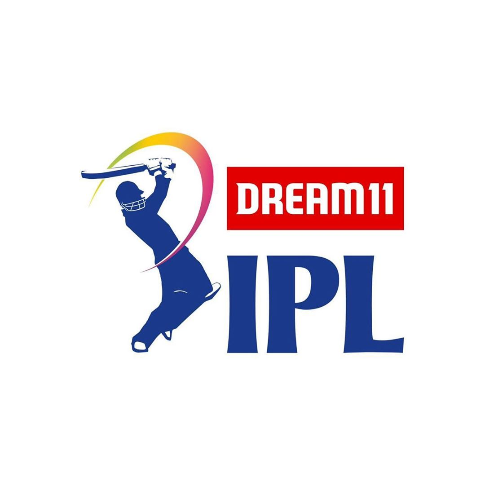

Players
|
Standings
IPL NEWS
"Wife Didn't Allow": CSK Fan's Honest Banner During IPL Goes Viral
IPL 2021: All playoffs possibilities for the 8 teams in 10 points
'I'm not going to stand on air and call out their names': Brian Lara claims CSK have 'couple of weak areas' in IPL 2021
"Still Having Neck Issues," Faf Du Plessis Opens Up On His Abu Dhabi Injury
AB de Villiers son punches his hand on chair in disappointment, hurts himself after his father got out